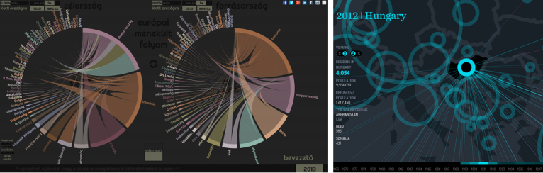

|
Kérlek várj... Ha több, mint 30 másodperc után is ezt az oldalt látod, akkor jelenleg a szerverünk nem működik. Ideiglenesen a bejegyzést egy alternatív helyen (mirror) is elérheted, de az interaktív részek nem fognak működni. Próbáld frissíteni ezt az oldalt néhány perc múlva...  |